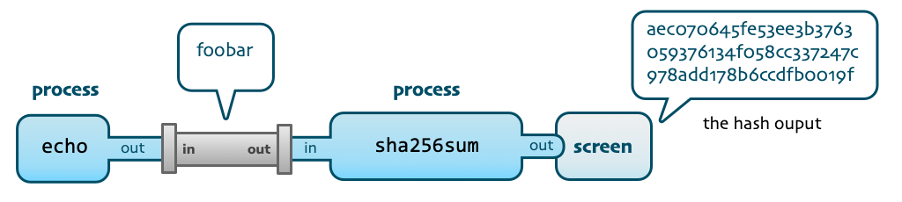
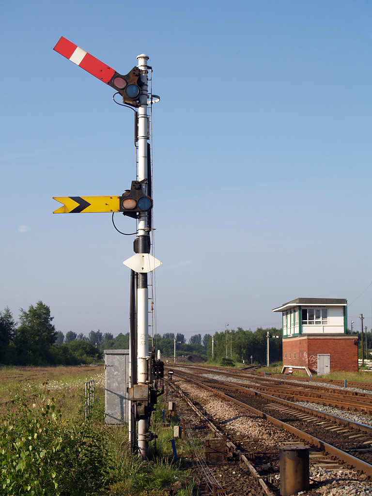
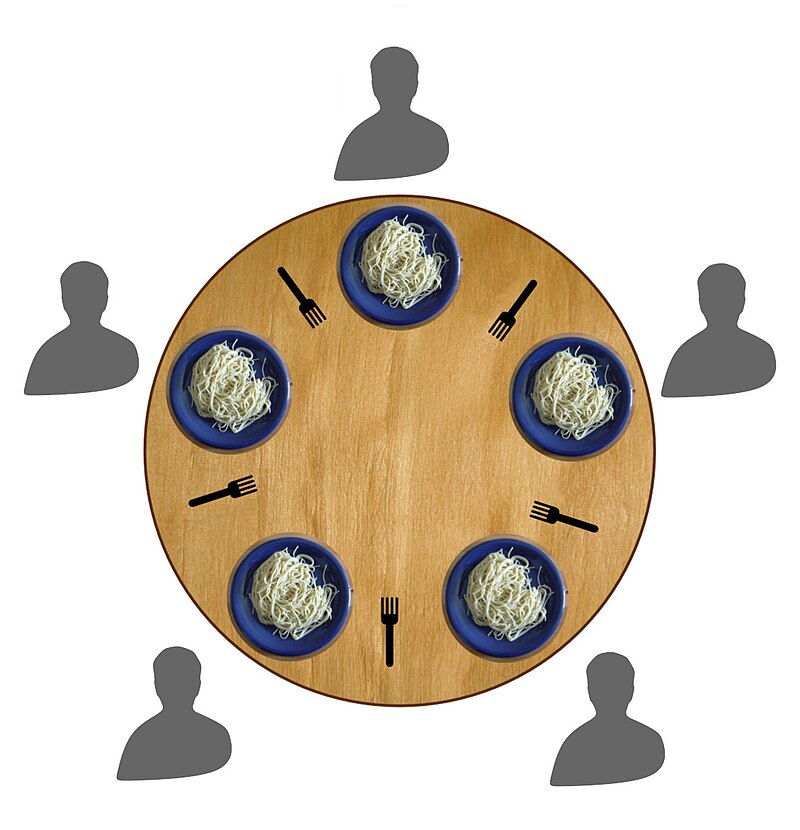

Deciding which process should run next.
We studied many scheduling algorithms, the most complex of which was
Traditional Unix Scheduling.
A pre-emptive scheduler.
Process priority computed every second from a
base value, CPU used and optional nice value.
System processes have more base priority.
CPU usage decays every 500ms so
processes which used less CPU recently are prioritised.
Used in early Unix systems and Windows NT.
However, not suitable for modern operating systems,
since it does not scale well to large numbers of processes.
Priorities are recalculated all at once, every second.
As well as scheduling processes, the OS also has to:
Prevent deadlocks,
all processes waiting for one of their number to do something.
Process protection:
insuring that processes cannot interfere with one another.
Recall that each process is owned by a user.
A user can mess with their own processes, but not the processes of other users.
Provides security.
A special user, called root can mess with the processes of all users.
The MMU also provides a hardware solution to prevent one process from accessing another process’s memory.
The OS works hard to isolate processes from each another.
What happens if one process needs to communicate with another?
E.g., one process may need to tell another that a particular job, e.g., disk write, is done.
Or a new process may need to tell the Window Manager to make a new GUI window.
OS facilitates communication between processes,
but takes care to do this safely.
Many methods of IPC, we will study a few:
Possibly the simplest method of IPC,
since it uses an existing mechanism.
Which file should be used?
Communal IPC file,
but if more than two processes are sharing data, how do we tell which bytes are meant for which process.
Then use one file per pair of processes,
but some prior communication is needed to agree on a file.
How does process \(B\) know when process \(A\) is finished writing?
File permissions must be set correctly,
so that the OS will allow both processes to access the file.
Useful for sharing large amounts of data.
Two-ended, FIFO data structure.
Allows output of one process to be used as input of another.

Allow sharing data, similar to files,
but provide synchronisation, too.
FIFO: data is read in the same order as it is written.
Pipes are unidirectional (data flows in one direction), but two-way communication can be achieved with two pipes.
Pipes affect scheduling, as they can block processes:
it’s possible to cause a circular wait with two pipes.
Implemented as a buffer (block of memory managed by the OS).
In Unix, the | character creates a pipe between two processes.
E.g., on the command line, $ ls -1 | grep foo
$ is the shell prompt.ls -1 lists all files in the current directory, one per line,| takes this list of files (output of ls -1) and passes it to the next process,grep foo filters the input, returning only lines containing foo – in this case, it filters the files.play with pipes!
Check out this article on processes and pipes.
Same drawbacks as with files:
Where is the shared memory,
When should process \(B\) start reading,
I.e., how does it know that process \(A\) has finished writing.
Authorisation: \(A\), \(B\) and no other processes should have access to the shared memory.
Despite the drawbacks, it is still widely used due to its speed,
but it is used alongside other synchronisation mechanisms.
Software equivalent of hardware interrupts, i.e.,
The signal handler is a piece of code, written by the programmer.
The OS only allows signals to be sent to processes with the same user ID.
Admin (the root user) can send signals to any process.
The OS itself can send signals, too,
e.g., to indicate that a peripheral is ready.
All signals must go through the OS.
Provides protection:
e.g., user ID checking.
Some signals have specific behaviour which cannot be overridden,
e.g., KILL signal causes a process to be terminated immediately.
Signals are used by the OS if a process has done something bad, e.g.,
SIGSEGV, segmentation fault),SIGILL, illegal instruction),How many signals do you know?
If you’ve ever managed your own memory, you’ve probably seen a SIGSEGV. What does it mean?
Look up the different signals and find out
Widely used,
They are fast and efficient,
Only send a small amount of data,
Asynchronous (can be sent / received at any time),
which means they can be fiddly to program.
Often used in conjunction with other IPC techniques,
A flag (variable) allowing synchronisation of processes.
Another great invention of Dijkstra, who wrote
“Go to sleep, we’ll wake you up again when you need to continue.”
Two actions:
P) (also signal, post, raise, up and unlock),V) (also lower, down, lock).Exercise: find out what P and V stand for – Dijkstra is Dutch.
Likely unrelated to the flag language;
probably from the Greek “apparatus for signalling”.*
One process often needs to tell another that it has finished a task,
semaphores allow this.
E.g., \(A\) writes to an area of shared memory, then signals process \(B\) using a semaphore,
process \(B\) waits for the semaphore, which opens when \(A\) has finished with the memory.
Provide synchronisation and mutual exclusion.
E.g., a train arrives at a Railway Semaphore,

OS signals are designed to alert a process of a specific event,
e.g., a key press, or invalid memory access.
Semaphores are specifically designed to implement
synchronisation and mutual exclusion.
A semaphore allows the process to “wait” for a certain event,
e.g., a write to shared memory.
Semaphores are atomic,

Can be implemented in hardware or software.
E.g., there are specific CPU instructions.
Very fast with hardware support.
Can be used to protect shared resources,
both in the OS and in user-land.
They are low-level and easy to get wrong:
it’s easy to cause accidental deadlock.
Some consider semaphores to be too low-level and complicated and proposed alternative approaches:
POSIX is a set of standard libraries implemented by some OS’s.
Memory Management